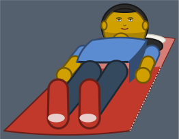

Dress Up reports · ^du_report(14) · 2026-10-19 · about Messed Up Dress Up, a game made with M and N · after ^du_report(13)
Posing the body
How is the friend's body posed, what does a new pose need from the drawing, and which poses come next? From two tickets of 2026-10-19, ticket 412 (lying down along the tent's sleeping bags) and ticket 414 (elbows and knees), and Matthew's calls on them, logged as they came (ticket 422). Pictures are the game's own drawings, on 0.0.342 and 0.0.343.
- Three views, and transforms of them. The friend is drawn facing us, in profile, or from behind; crawling toward or away from us squashes the front or back view, and lying level turns the profile 90 degrees. Those transforms hold for the poses they were made for, but not for a new angle.
- New angles are drawing routines of their own. Lying along the tent's sleeping bags, the standing friend turned to the bag's slant read as rolling over, and skewed onto it, as too flat. Matthew: "we just need more angles of the body, as their own drawing routine, not cheap 2d transformations". The first one, lying face up along a side wall, is in the game since 0.0.338 (0.0.342 as it stands).
- Elbows and knees now turn in three dimensions. Since 0.0.343 a forearm or a shin can curl toward the front (a knee's toward the back) and swing about the bone above it, and is drawn as it then points: four sliders, on top of every pose and animation.
- Layering by depth is the rule to keep. What is nearer us covers what is farther, part by part: the torso covers the arm behind it, a foot turned behind its leg is drawn under it, a head's hair goes where the head faces away from us. Today one fixed order of layers serves every pose; new poses need their own order.
- Next: lying on one side, a three-quarter view, beds along a wall. Each a routine of its own, plain friend first; costumes and hair styles after (What next, below).
The views we have
The friend is one drawing with a few ways of facing: toward us, to either side (profile), or away from us (from behind, the face hidden by hair). Two more poses are the same drawings moved: crawling toward or away from us squashes the front or back view, and crawling in profile or lying level turns the profile about the hips. Where the drawing branches on the way the friend faces, counted in the code of 0.0.337 (uses of dir, the side they face; away, from behind; squash, crawling toward or away):
| file | lines | dir | away | squash |
|---|---|---|---|---|
| 18-drawing.js (the drawing) | 1081 | 100 | 45 | 27 |
| 06-costumes.js | 533 | 46 | 17 | 0 |
| 04-hair.js | 506 | 17 | 1 | 0 |
| 08-body.js | 760 | 6 | 6 | 0 |
| 07-underwear.js | 63 | 2 | 0 | 0 |
| 03-face.js | 431 | 0 | 0 | 0 |
So a new angle is not one function but a drawing of every part for it: the head and face, each hair style, the shirt, the pants and each costume, the hands and the feet.
A view of its own: lying along a side wall
The orange tent's two sleeping bags run along its side walls, from the open end near us to the pillow at the far wall, at about 45 degrees on the screen. To lie on one, the friend's body has to follow that slant in the tent's perspective. Eight tries, each with what Matthew said:
| try | what it drew | Matthew | released |
|---|---|---|---|
| 1 | The standing friend turned to the bag's slant (38 degrees about the feet) and shortened to its length (0.70) | "Looks like we are tilting to roll over, not face up." | Not released. |
| 2 | A skew about the feet: the width across the picture, the length along the bag | "latest attempt looks better, but now we are 'too flat'" | Not released. |
| 3 | The head and the feet skewed back upright on the skew | (not shown: Matthew's next words came first) | Not released. |
| 4 | A drawing of its own (lieAlongSvg): volumes laid on the bag in its perspective, far to near | "we just need more angles of the body, as their own drawing routine"; "lying with head and feet at a 45 degree angle --- as in the tent ... L/R symmetry works" | 0.0.338 |
| 5 | The head smaller, so it rests on the pillow | 0.0.339 | |
| 6 | The face under its hair, not over it | "the lying view looks way better, but there's a layering issue with the hair?" | 0.0.340 |
| 7 | The face looking up at the ceiling, not at us | "the face should be facing up -- not looking towards us --- it's pretty goofy face wise still"; the legs, torso, arms and feet "good enough for now" | 0.0.341 |
| 8 | The hair on the head's far side | "the hair should be on the far face of the head ball, not the top of it (the head is reclined now, looking upward)" | 0.0.342 |

Elbows and knees in three dimensions
Until 0.0.343 a limb bent only in the picture: facing us, an elbow's bend swung the forearm out to the side. Now a forearm or a shin can turn out of the picture: curled toward the front of the body (a knee's toward the back), then swung about the bone above it, and drawn as it then points, so a forearm pointing at us is seen short. Four sliders in 🦒 Neck, arms & legs: 🏋️ elbows curl, 🫖 elbows swing, 🦶 knees curl, ↔️ knees swing.

Layering by depth
Matthew, on the first try at lying: "we need the back leg to obscure the front leg; the torso obscures the back arm, etc". The rules found so far:
- A body lying face up along a surface that recedes keeps its width across the picture: shoulders and hips level. Only its length follows the surface, up its slant. So the map is a skew about the feet (across stays across, head to feet goes along the bag), not a turn. In 18-drawing.js: translate(0 g) matrix(1 0 -ux -uy 0 0) translate(0 -g), u the head's way up the bag per unit of the friend's height.
- Matthew, the same moment: "we need the back leg to obscure the front leg; the torso obscures the back arm, etc". When a pose turns or rolls the body, its parts must be layered by depth: what is nearer to us over what is farther, part by part. Said looking at the first try, which looked like a roll onto one side.
- THE DIRECTION: new angles of the body, each its own drawing routine, not 2D transformations (turns, skews, squashes) of the views we have. All three tries are parked, not released, on kids-choice-games branch lie-along-412 (2dd96e6), with the parts worth keeping: the tent's bags as lie seats with their open end and pillow (SEATS.tent, tentFrame, bagEnds, TENT_BAGS), lieOn's feet at the open end, click to lie.
- Matthew picked the first new angle: "lying with head and feet at a 45 degree angle --- as in the tent. it's specialized to that, I think. L/R symmetry works, but otherwise it's specialized for laying down near the L or R wall edge of a room, where the pseudo 3d perspective requires a new approach, just for that." So a view per situation, not one general 3D body: this one for lying along a side wall, mirrored for the other wall.
- Lying face up, the face looks at the ceiling, not at us (Matthew: "the face should be facing up -- not looking towards us --- it's pretty goofy face wise still"; the legs, torso, arms and feet "good enough for now"). Seen from the feet and above, it shows on the head's upper part, shortened: hairline and forehead at the far top, the eyes (whites, the pupils at their far edges: looking up past the forehead), the brows, the nose, nearer us the mouth, and below them the underside of the chin and jaw in shade; the ears at the head's sides. 0.0.341.
- The head reclined, looking up: its hair is on the ball's far face, the crown toward the pillow, not on its top (Matthew: "the hair should be on the far face of the head ball, not the top of it (the head is reclined now, looking upward)"). Drawn as a mass behind the head, showing round its far edge, a thin hairline at that edge, and the hair spread on the pillow. 0.0.342. A rule for every view: place each part on the ball by which way the head faces in that pose, then layer by what faces us.
- Layering by depth, one more case: facing us, a shin turned more than 30 degrees away puts the foot behind the leg, so its shoe is drawn before the leg and the pants, under them. Found by a bug worth remembering: the drawing is one text with saved positions (legsAt, feetAt); inserting before one moves every later one, and ticket
^ticket(129)'s cut at feetAt then dropped the body. Insert only after the last cut that uses a position.
Every animation's bends
Each animation's own elbow and knee bends, in degrees, sampled at 8 points of its cycle on 0.0.342 with the new sliders at 0:
| animation | seen | elbows | knees |
|---|---|---|---|
| walking | sideways always | 14 | 4 to 45 |
| walking up or down stairs | sideways always | 22 | 8 to 100 |
| running | sideways always | 85 | 25 to 95 |
| crawling | sideways always | 0 | 78 to 102 |
| swimming | either | 0 to 36 | 10 to 80 |
| climbing (with a ladder), facing us | facing us | 20 to 50 | 0 to 55 |
| climbing (with a ladder), in profile | in profile | 6 to 20 | 16 to 78 |
| crouching | either | 25 (facing us: now a 55-degree curl) | 75 |
| climbing, the two jumps | either | none of their own | none of their own |
Re-adjusted: the crouch facing us, whose bend in the picture put its elbows out to the sides; it now curls the forearms toward us. Left as they are, for Matthew to judge: climbing facing us, and each animation with the new sliders set (with the knees curled 70 degrees, walking is on the knees, as it was with the old knee bend).
The log
Every entry, as logged (23; [3]).
- found
^ticket(412)Lying along a sleeping bag that runs away from us (the orange tent's, along a side wall), first try: the whole body turned in the picture to the bag's slant (rotate 38 degrees about the feet) and shortened to its length (0.70). It read as rolling over, not lying face up. (Matthew, 2026-10-19, on the first try (ticket^ticket(412)): "Looks like we are tilting to roll over, not face up.") - a rule
^ticket(412)A body lying face up along a surface that recedes keeps its width across the picture: shoulders and hips level. Only its length follows the surface, up its slant. So the map is a skew about the feet (across stays across, head to feet goes along the bag), not a turn. In 18-drawing.js: translate(0 g) matrix(1 0 -ux -uy 0 0) translate(0 -g), u the head's way up the bag per unit of the friend's height. - a rule
^ticket(412)Matthew, the same moment: "we need the back leg to obscure the front leg; the torso obscures the back arm, etc". When a pose turns or rolls the body, its parts must be layered by depth: what is nearer to us over what is farther, part by part. Said looking at the first try, which looked like a roll onto one side. (Matthew, 2026-10-19, right after (ticket^ticket(412))) - found
^ticket(412)How layering works today: the friend is one SVG drawn in a fixed order of layers (18-drawing.js, drawNow), each part's layers wrapped as data-part groups (veil): far arm and far leg first, then the body, the head, the near arm and hand. In profile the far arm and leg can be drawn apart, among the scene's objects (figure-far, legApart, farDeep), so a thing can stand between them and the rest. A turn (crawling, lying level: rot about the hips) or a skew (lying along) moves the drawing but never changes this order. - found
^ticket(412)The poses so far: standing; sitting on a seat (ticket^ticket(50)); crawling, turned about the hips (rot) or seen short toward or away from us (squash); lying level, on the back in profile or on the side facing us, the head left or right (ticket^ticket(299): lieHow, lieHead, turned plus or minus 90 degrees); lying along a receding surface (ticket^ticket(412): a skew); a hug (lifted, from the side); the dances and other POSES entries (joint angles: poseArmL/R and the like); on bubbles, a balancing stance and walk (ticket^ticket(343)); swimming and treading water. - next
^ticket(412)Rolling over, or lying on one side along a bag: needs the depth order to follow the roll (the upper leg over the lower, the torso over the arm beneath it), so a per-pose order of the parts' layers, not the one fixed order. - next
^ticket(412)Lying along beds and bunk beds against a side wall (ticket^ticket(412)'s own later step, if they are redesigned that way): the same skew, from the bed's own ends. - next
^ticket(412)Perspective along the body: lying away from us, the head should be a little smaller than the feet. An SVG matrix cannot taper; each part would need its own scale by its depth (the head's, the hips', the feet's). - found
^ticket(412)Second try, a skew about the feet (width across, length along the bag): face up now, but "too flat" (Matthew). A third, the head and the feet skewed back to round and upright about their own middles, was written but not shown. (Matthew, 2026-10-19: "latest attempt looks better, but now we are 'too flat'") - a rule
^ticket(412)THE DIRECTION: new angles of the body, each its own drawing routine, not 2D transformations (turns, skews, squashes) of the views we have. All three tries are parked, not released, on kids-choice-games branch lie-along-412 (2dd96e6), with the parts worth keeping: the tent's bags as lie seats with their open end and pillow (SEATS.tent, tentFrame, bagEnds, TENT_BAGS), lieOn's feet at the open end, click to lie. (Matthew, 2026-10-19: "i think we just need more angles of the body, as their own drawing routine, not cheap 2d transformations of the poses that we have now.") - found
^ticket(412)The angles today, by the code: front (dir 0), profile left and right (dir -1, 1), from behind (away). Crawling toward or away from us is the front or back view squashed (squash), and crawling in profile and lying level are the profile turned about the hips (rot): both are 2D transformations already. Where the angles branch, counted on 0.0.337: 18-drawing.js (1,081 lines) 100 uses of dir, 45 of away, 27 of squash; 06-costumes.js 46 and 17; 04-hair.js 17 and 1; 08-body.js 6 and 6; 07-underwear.js 2; 03-face.js none (one front face; its profile is made in 18-drawing.js). So a new angle is a drawing of every part for it: the head and face, every hair style, the shirt, pants and every costume, the hands, the feet. - next
^ticket(412)Angles to draw as routines of their own, for the poses asked for so far: (1) lying face up, seen from the feet end and above, the body running away from us (the tent's sleeping bags, ticket^ticket(412); beds along a side wall later); (2) lying on one side, seen from the front, with the depth order of a roll (the upper leg over the lower, the torso over the arm beneath); (3) a three-quarter view, between front and profile, for turning. To decide with Matthew: which first, and whether a new angle must cover every costume and hair style at once or can start with the plain friend. - a rule
^ticket(412)Matthew picked the first new angle: "lying with head and feet at a 45 degree angle --- as in the tent. it's specialized to that, I think. L/R symmetry works, but otherwise it's specialized for laying down near the L or R wall edge of a room, where the pseudo 3d perspective requires a new approach, just for that." So a view per situation, not one general 3D body: this one for lying along a side wall, mirrored for the other wall. (Matthew, 2026-10-19) - found
^ticket(412)The routine (lieAlongSvg, 18-drawing.js): the body as volumes on the bag's floor, each point placed by distance along the bag from its open end, place across it and height, in the bag's widths, with the bag's own perspective (its edges run to where the tent's seams meet, and a step along it shrinks as 1/(y - vy)). The head is a ball (round from any side) on the pillow, its hair on the pillow and over its far side, its face tipped toward the feet by the pillow, so toward us; the torso shows its top (the shirt) and its side toward the room; arms and legs are tapered capsules; the feet point up, soles toward us. Drawn far to near, the wall's side before the room's: hair, head, neck, the arm by the wall, the body, the arm by the room, the legs (wall's first), the feet. - found
^ticket(412)First tries at that routine: the head too high past the pillow and its hair cap covering the face; fixed by tipping the face toward the feet (as a pillow tips a head) and keeping the hair to the far crescent. Not yet in it: costumes, hair styles one by one, the face's own settings, patterns, the 👁️ see-through sliders. - found
^ticket(412)The hair's layering on the lying head (Matthew: "the lying view looks way better, but there's a layering issue with the hair?"): its cap over the head's far side came down past the eyes, which were drawn on top of it. A face placed on the ball's upper side projects to the very top of the circle, leaving no room for a hairline, so the head propped on the pillow faces us: the face in the circle's middle, the hair over its top to a hairline above the eyes (bangs bowing at the middle), the hair spread on the pillow behind. Order on a head: hair behind, head, hair cap, eyes, mouth. 0.0.340. (Matthew, 2026-10-19) - a rule
^ticket(412)Lying face up, the face looks at the ceiling, not at us (Matthew: "the face should be facing up -- not looking towards us --- it's pretty goofy face wise still"; the legs, torso, arms and feet "good enough for now"). Seen from the feet and above, it shows on the head's upper part, shortened: hairline and forehead at the far top, the eyes (whites, the pupils at their far edges: looking up past the forehead), the brows, the nose, nearer us the mouth, and below them the underside of the chin and jaw in shade; the ears at the head's sides. 0.0.341. (Matthew, 2026-10-19) - a rule
^ticket(412)The head reclined, looking up: its hair is on the ball's far face, the crown toward the pillow, not on its top (Matthew: "the hair should be on the far face of the head ball, not the top of it (the head is reclined now, looking upward)"). Drawn as a mass behind the head, showing round its far edge, a thin hairline at that edge, and the hair spread on the pillow. 0.0.342. A rule for every view: place each part on the ball by which way the head faces in that pose, then layer by what faces us. (Matthew, 2026-10-19) - found
^ticket(414)Elbows and knees now turn in three dimensions (turned3, 18-drawing.js): the second bone (forearm, shin) curled toward the front of the body (the knee's toward the back), then swung about the first bone's line, and drawn as it then points, seen from the front of the picture; a bone toward us or away is seen short (kept a sliver long end on: at 0 the pants and shirt were lost to NaN). Four sliders in 🦒 Neck, arms & legs, both sides alike and mirrored: 🏋️ elbows curl, 🫖 elbows swing, 🦶 knees curl, ↔️ knees swing. On top of every pose and animation; an animation can give its own (ElbowCurlL/R, KneeCurlL/R). - a rule
^ticket(414)Layering by depth, one more case: facing us, a shin turned more than 30 degrees away puts the foot behind the leg, so its shoe is drawn before the leg and the pants, under them. Found by a bug worth remembering: the drawing is one text with saved positions (legsAt, feetAt); inserting before one moves every later one, and ticket^ticket(129)'s cut at feetAt then dropped the body. Insert only after the last cut that uses a position. - found
^ticket(414)The audit of every animation's elbows and knees (moveNow sampled at 8 phases, 0.0.342, sliders at 0). Walking, stairs, running and crawling always turn sideways (ANIM_SIDEWAYS), so their bends are forward bends in profile: walk elbows 14, knees 4..45; stairs elbows 22, knees 8..100; run elbows 85, knees 25..95; crawl elbows 0, knees 78..102. Swimming: elbows 0..36, knees 10..80 (either way). Climbing: facing us elbows 20..50, knees 0..55; in profile elbows 6..20, knees 16..78. Crouching: elbows 25, knees 75, either way. The jumps and climbing up give no bends of their own. Re-adjusted: facing us, the crouch's 25-degree bend was in the picture, the elbows out to the sides; now a 55-degree curl, the forearms toward us. Left as they are, for Matthew to judge: climbing facing us (its in-picture elbow bends), and every animation with the new sliders set (with knees curled 70, walking is on the knees, as with the old knee bend). - next
^ticket(414)Per side sliders (each elbow and knee its own), if wanted; the existing 💪 elbows bend is a bend in the picture, which facing us reads as side to side: whether to keep it beside the new swing, or fold it in. - found
^ticket(425)The lying-along view draws the friend's own hair style lying on the pillow (lyingHair: none; short, close round the head; long, fanned out, farther the longer; curly, a ring of curls; spiky, spikes from the crown; an afro, a big puff; pigtails, two tied tails out on the pillow, kept on the bag, more length going along it), each behind the head and round its far side, with a hairline at the far edge (lower with more bangs); and every part as see-through as its 👁️ slider. A style is drawn for the pose, not the standing hair transformed. 0.0.345.
What next
- 1. Lying on one side: a view of its own, seen from the front, its layers in a roll's order: the upper leg over the lower, the torso over the arm beneath.
- 2. A three-quarter view: between facing us and profile, for turning: every part drawn for it.
- 3. Beds along a side wall: the lying-along view from a bed's own ends, if the beds and bunk beds are redesigned to stand that way.
- 4. Costumes and hair styles in the lying-along view: today it draws the friend's own colours only.
- 5. Per-side sliders for the elbows and knees: each its own, if wanted; and whether the old 💪 bend in the picture stays beside the new swing.
- 6. A per-pose order of the layers: in place of the one fixed order: each pose says which part is nearer.
- 7. Each part's size by its depth in a lying view: the head a little smaller than the feet, lying away from us.
How this was put together
Written on 2026-10-19 by Claude, for Matthew, from the log kept during tickets 412 and 414 at his ask ("start to log details for a report about posing our body --- we want notes for further poses, if possible"). The tries and fixes were looked at in the desktop app's own browser (no test browser on the laptop), drawn large by copying the friend's drawing into a page of its own; the audit sampled each animation's joint angles in the same browser; the checks that guard them (tools/checks/lie412.mjs, joints414.mjs) run on GitHub's computers after each release. The pictures are the game's own drawings, copied from that browser. Versions [2]; tickets [1].